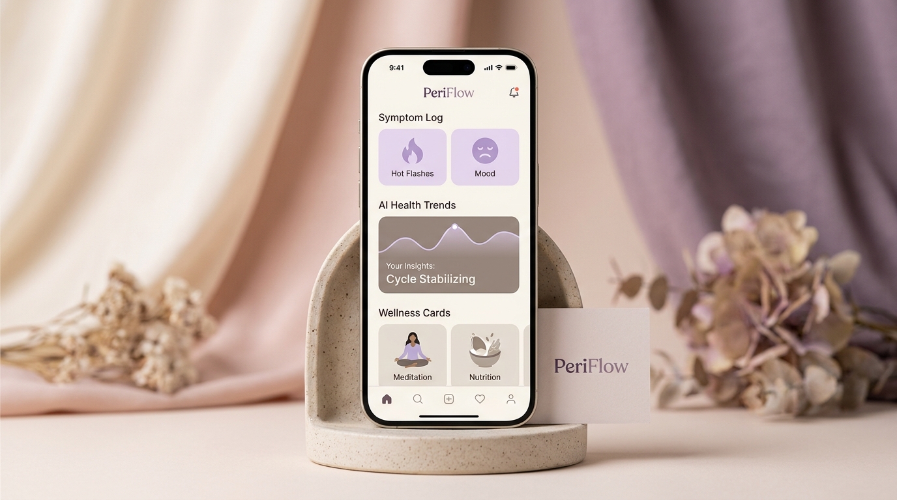

auto_awesome
AI-powered menopause symptom tracker
Understand your menopause journey with AI
Track symptoms, discover patterns, and better understand changes during perimenopause and menopause in a supportive, intelligent environment.

Everything you need to understand your symptoms
A comprehensive suite designed to bring clarity to your unique perimenopause experience.
psychology
Brain Fog Tracking
Track mental clarity changes and understand your patterns to reclaim focus.
vital_signs
Symptom Tracking
Record daily symptoms like hot flashes, fatigue, mood changes, and sleep quality.
insights
AI Insights
Get personalized insights based on your symptom patterns to anticipate changes.
event_available
Daily Check-ins
Build awareness of your health journey with simple, guided daily reflections.
How it works
Three simple steps to clarity and control.
edit_note
Step 01
Track your symptoms
Record daily experiences and changes intuitively.
travel_explore
Step 02
Discover patterns
Understand trends over time with visual data charts.
lightbulb
Step 03
Gain insights
Use AI-powered guidance to better understand your journey.
Learn about perimenopause and menopause
Expert-backed articles to help you navigate this transition.

10 Common Perimenopause Symptoms After 40
Read article north_east
Why Am I So Tired During Perimenopause?
Read article north_eastHow to Track Menopause Symptoms
Read article north_east
auto_awesome

Start understanding your symptoms today
Join thousands of women who are finding clarity and support through their transition.